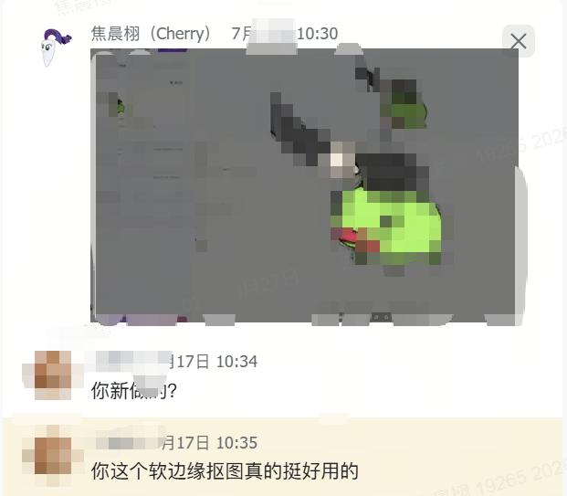
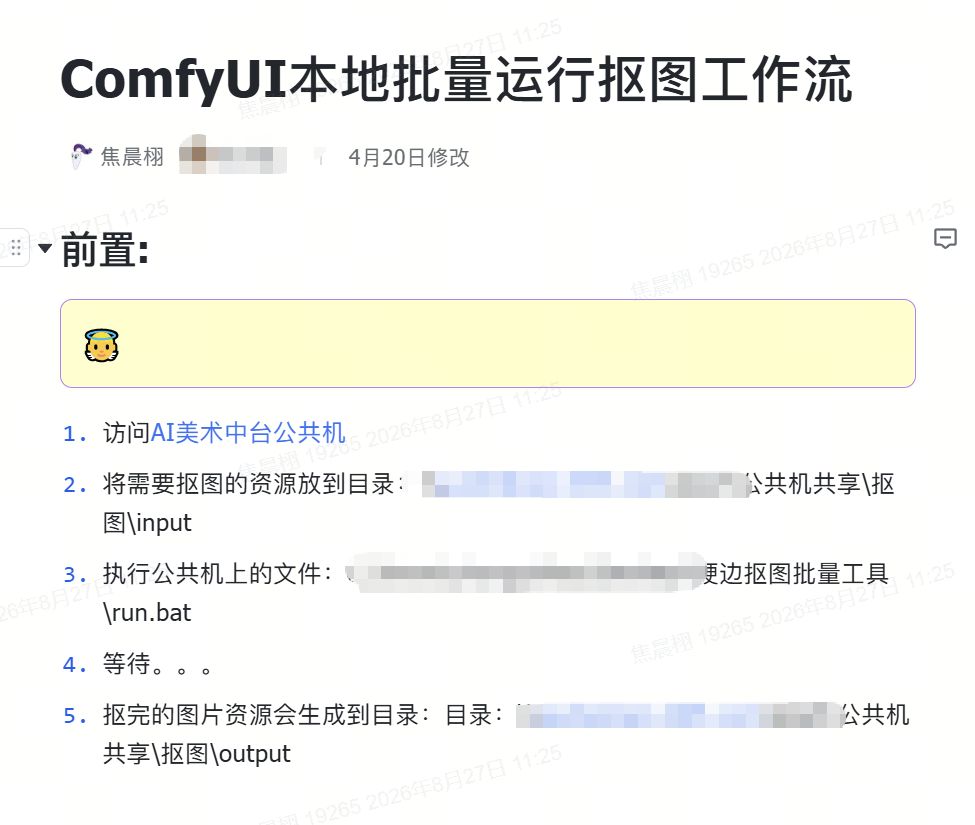
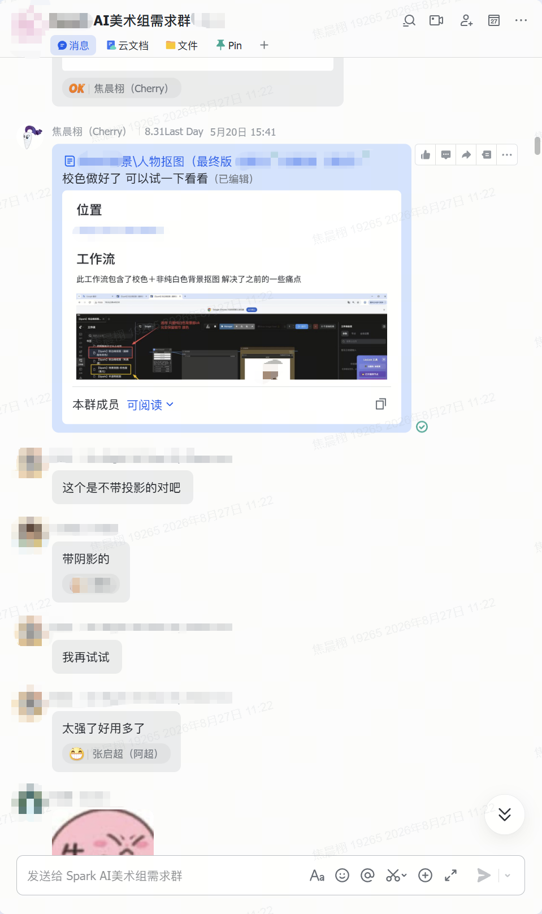
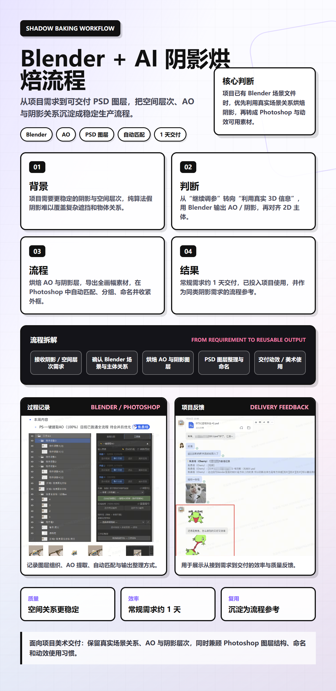
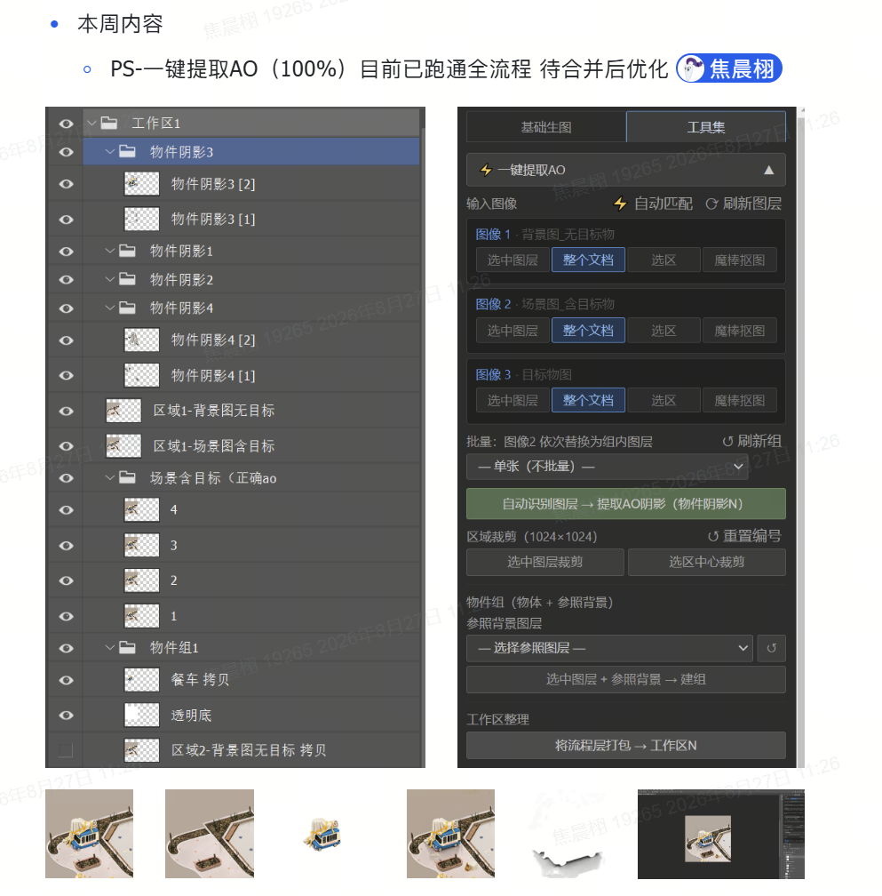
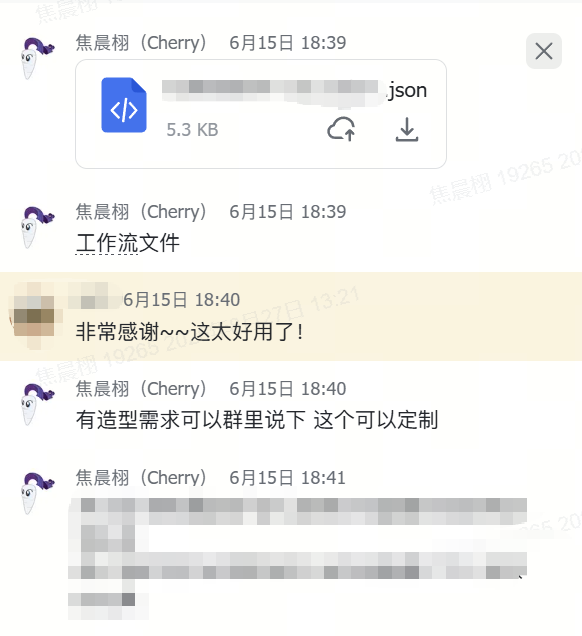
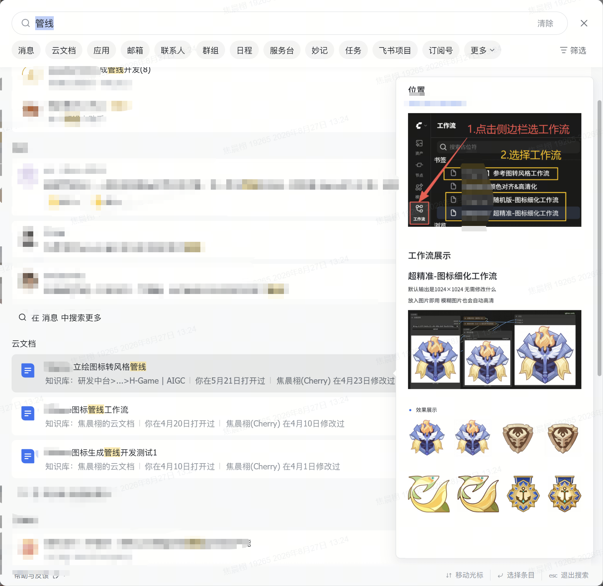

AI Art Production Workflow / Game Art Pipeline
把美术需求做成 可复用 AI 工作流
2D 抠图 / 3D+2D 阴影 / 公司自研 3D 贴图软件
面向真实项目美术需求，沉淀可运行、可交付、可复用的 AIGC 工作流。
- 综合美术（AI向）
- 2D 抠图
- 3D+2D 阴影
- 自研 3D 贴图
- ComfyUI
- Blender
- LoRA / PS-AI
Profile
综合美术（AI向）

视觉出身，流程落地。
需求拆解、流程上线、团队复用，证据均已脱敏。
Positioning
需求判断 / 工具落地 / 项目复用
围绕项目美术需求，完成参考整理、流程拆解、节点组合、输出规范和交付验证。
已落地链路：2D 抠图、Blender 阴影烘焙、公司自研 3D 贴图软件。
Internship Track
实习经历
从视觉设计到 AIGC 工作流落地
参与儿童会员活动设计、会员资源位和 IP 人物生成等视觉需求，负责结合用户审美、产品目标和投放节奏输出方案。
核心数据
160 张/月
投放图产出
2 天
完成 4 个主题
3 个月
运营视觉实习
- 主导六一 AI 换装生成与主页 IP 人物生成，月产出投放图约 160 张，平均 2 天完成 4 个主题。
- 从运营设计、角色视觉和页面呈现中积累对构图、色彩、光影和用户反馈的判断经验。
Capability System
三条核心能力
2D 抠图 / Blender 阴影 / 3D 贴图工具链
Selected Works
三个落地项目
Evidence Gateway
三条核心项目证据
集中展示三条已落地链路：项目问题、方案判断、交付结果和脱敏证据。
2D：软 / 硬边缘抠图工作流
毛发、半透明边缘、带阴影素材和动画序列抠图需求，整理为可批量运行的 ComfyUI 工作流。
长期动画素材需求
批量本地运行
跨组咨询复用
- 背景
- 角色动画、毛发、半透明边缘和带阴影素材需要批量抠图。
- 判断
- 图标、道具适合硬边；角色、发丝、半透明素材需要保留 Alpha 过渡。
- 流程
- 用双重抠图节点提取透明底，叠加半透明保留、边缘校色、批量命名和本地运行说明。
- 结果
- 软边版本稳定支持长期动画需求；硬边与软边流程均进入项目使用，产生跨组咨询。
- 证据
- 批量运行文档、项目反馈、带阴影版本反馈、跨组咨询记录。




3D+2D：Blender + AI 阴影烘焙流程
利用项目已有 Blender 场景信息烘焙 AO / 阴影，再整理成 Photoshop 可编辑图层，支撑 2D 美术和动效继续使用。
约 1 天常规交付
AO / 阴影独立图层
PSD可编辑交付
- 背景
- 3D 场景中的阴影、AO 和空间层次需要转成 2D 可交付素材。
- 判断
- 已有 Blender 场景文件，可用真实 3D 信息输出 AO、接触阴影和遮挡层次。
- 流程
- 固定相机与画幅，烘焙 AO / 阴影层并导出全画幅素材；PS 自动识别、命名、分组并收紧外框。
- 结果
- 常规需求约 1 天交付，已投入项目使用；获得“超越预期”反馈。
- 证据
- 需求记录、流程长图、PS 图层与工具截图、交付反馈。



3D：公司自研 3D 贴图软件工具链
围绕公司自研 3D 贴图软件的模型上贴图能力，重构双图材质编辑工作流，形成贴图生成到平台调用的闭环。
V3流程上线
双图材质编辑
替换旧版流程
- 背景
- 公司自研 3D 贴图软件需要稳定的模型上贴图和局部重绘流程。
- 判断
- 围绕白膜贴图、双图材质编辑、局部重绘、保存和输出回写，确认工具链能否形成生产闭环。
- 流程
- 重构 Flux2 Klein TrueV3 双图材质编辑流程，串联本地绘制、云端生成、局部重绘、保存和平台调用。
- 结果
- 重做版本替换旧版贴图 / 局部重绘流程并上线，进入公司自研 3D 贴图软件。
- 证据
- 合并请求、V3 效果展示、替换旧流程沟通、平台页面截图。


Supporting Evidence
辅助证据
公共平台、PS-AI 与 LoRA 只保留与三条主线相关的记录。
公共平台工作流上线
2026.04-08，沉淀 10+ 个项目定制 ComfyUI 工作流，覆盖 6 类生产场景。
5 个月
沉淀周期：2026.04-08
10+
上线数量：项目定制工作流
6 类
6 类生产场景：图标 / 角色 / 道具 / 抠图 / 阴影 / 贴图
多组
复用范围：项目组与中台协作方
几十到上百张
批量处理：几十到上百张素材
约 1 天
常规交付：Blender 阴影烘焙



PS-AI 插件协作
围绕局部重绘、高清去噪、提示词文案和工作流接入提供功能参考。


LoRA 风格适配
围绕项目画风需求做参考整理、训练文档、批次生成和反馈记录。